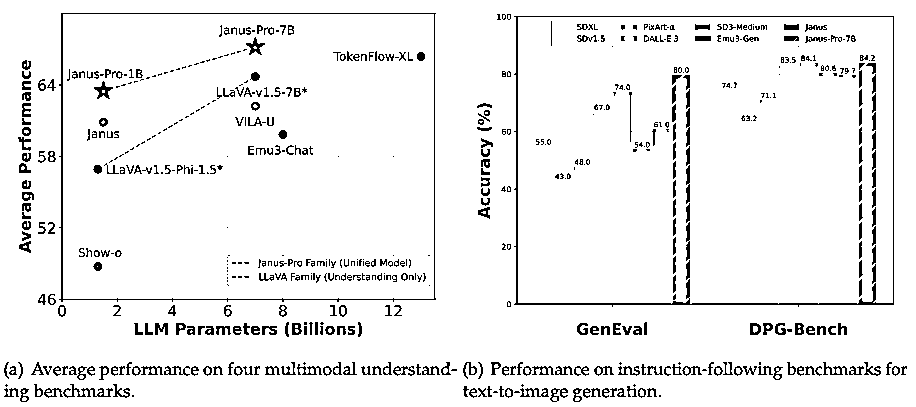

来源：https://duuxkmjwsy.feishu.cn/docx/T7zjdlpNeoB6cax9X1Wcso2Dnke
https://www.liblib.art/modelinfo/5aa87cd7cc39445080e8b0f4fe75d3af
Janus是深度求索（DeepSeek）公司开源的多模态大模型，主打AI图像生成与AI图像识别，支持文生图、图生文等多模态交互，属于其AGI技术布局中的关键产品之一。（简而言之：一个能画图、能识图、开源可定制的AI模型）
Janus 1.3B【图像识别】https://huggingface.co/spaces/deepseek-ai/Janus-1.3B
JanusFlow-1.3B【图像识别】https://huggingface.co/spaces/deepseek-ai/JanusFlow-1.3B
三个步骤请按顺序执行，如果那个步骤已经安装对应软件可忽略此步骤。
详见来来的这篇公众号文章：

https://github.com/chflame163/ComfyUI_Janus_Wrapper/
https://github.com/ZHO-ZHO-ZHO/ComfyUI-DeepSeek-JanusPro
https://github.com/CY-CHENYUE/ComfyUI-Janus-Pro
打开工作流文件，红色箭头处选择Janus-Pro-1B模型，绿色框位置写上图像提示词，提示词支持中文/英文
详细描述图片的内容，输出要求: 一份中文描述, 一份英文描述
打开工作流文件，红色箭头处选择Janus-Pro-1B模型，绿色框位置写上生成图像的提示词，提示词支持英文
一共有三个版本，Janus-Pro为最新模型。
Janus-Pro：通过数据和模型缩放统一多模态理解和生成
Janus-Pro是之前作品Janus的高级版本。具体而言，Janus-Pro包含（1）优化的训练策略，（2）扩展的训练数据，以及（3）扩展至更大的模型尺寸。通过这些改进，Janus-Pro在多模态理解和文本-图像指令遵循能力方面都取得了显著进步，同时还增强了文本-图像生成的稳定性。

Janus：解耦视觉编码，统一多模态理解和生成
Janus是一个新的自回归框架，统一了多模态理解和生成。它通过将视觉编码解耦到单独的路径中来解决以前方法的局限性，同时仍然使用单个统一的Transformer架构进行处理。这种解耦不仅消除了视觉编码器在理解和生成过程中的角色冲突，而且增强了框架的灵活性。Janus超越了以前的统一模型，并匹配或超过特定任务模型的性能。Janus的简单性、高度灵活性和有效性使其成为下一代统一多模态模型的有力候选者。
JanusFlow：协调自回归和校正流，实现统一的多模态理解和生成
JanusFlow引入了一种极简架构，将自回归语言模型与整流流集成在一起，整流流是生成建模中最先进的方法。我们的关键发现表明，整流流可以直接在大型语言模型框架内训练，无需复杂的架构修改。大量的实验表明，JanusFlow在各自的领域中实现了与专用模型相当或上级的性能，同时在标准基准测试中显著优于现有的统一方法。这项工作代表了向更有效和通用的视觉语言模型迈出的一步。
2025.01.27：Janus-Pro发布，这是Janus的高级版本，显著改善了多模态理解和视觉生成。见论文
2024.11.13：JanusFlow发布，这是一种新的统一模型，具有用于图像生成的整流流。请参阅论文、演示和使用。
2024.10.23：VLMEvalKit中添加了用于再现论文中多模态理解结果的评估代码。请参考此链接。
2024.10.20：Janus-1.3B 发布（1）修复tokenizer_log.json中的一个bug。以前的版本导致无分类器指导无法正常工作，导致视觉生成质量相对较差。(2)发布Gradio演示（演示和本地）。